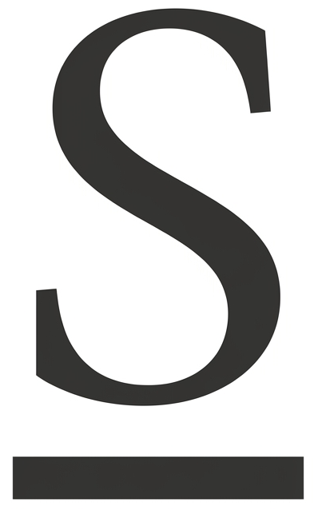

W
Subrayado — Word Básico
Inicio

Formato de texto
Subrayado
🎥 Video explicativo
✏️ Actividad
Instrucción:
Selecciona el texto correcto y aplica Subrayado. Son 2 tareas en total.
Tarea 1 de 2: Subraya la frase correcta usando el botón U.
U Subrayado
Quitar subrayado
Comprobar
Reiniciar
Selecciona un segmento de texto para comenzar.
◀ Cursiva
🏠 Ver todas
Fuente ▶
🏠
Inicio